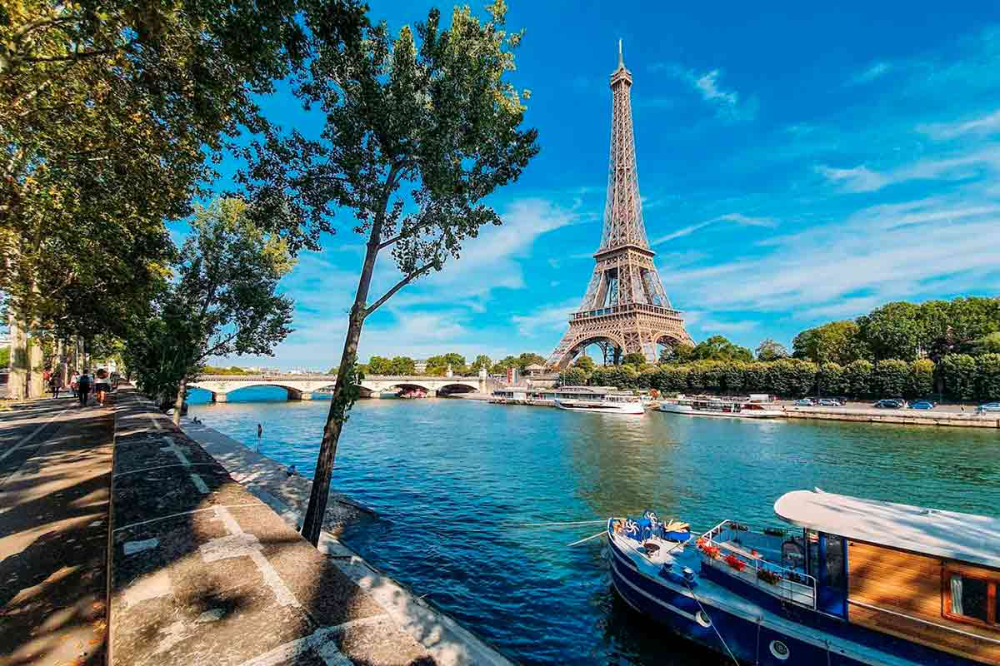
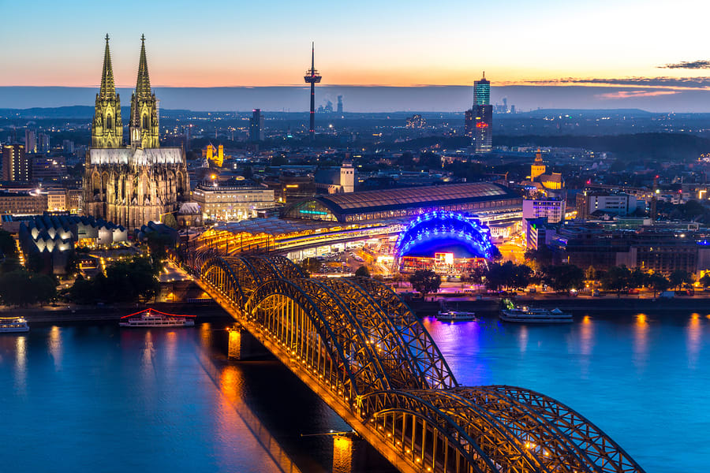

Países da Europa
França

A França, na Europa Ocidental, tem cidades medievais, aldeias alpinas e praias mediterrâneas. Paris, sua capital, é famosa pelas casas de alta costura, museus de arte clássica, como o Louvre, e monumentos como a Torre Eiffel. O país também é conhecido pelos vinhos e pela cozinha sofisticada. Antigos desenhos da caverna de Lascaux, o Teatro Romano de Lyon e o amplo Palácio de Versalhes atestam a sua rica história.
Leia mais sobre a França
Espanha

A Espanha, país europeu da península Ibérica, tem 17 regiões autônomas com geografia e cultura diversas. Madri, a capital, abriga o Palácio Real e o Museu do Prado, obras erigidas por mestres europeus. Segóvia tem um castelo medieval (Alcázar) e um aqueduto romano intacto. A capital da Catalunha, Barcelona, apresenta monumentos modernistas de Antoni Gaudí, como a Igreja da Sagrada Família.
Leia mais sobre a Espanha
Itália

A Itália, país europeu com uma longa costa mediterrânea, deixou uma marca poderosa na culinária e na cultura ocidentais. A capital, Roma, é sede do Vaticano e abriga obras de arte monumentais e ruínas antigas. Outra cidade importante é Florença, com obras-primas do Renascimento, como o "Davi", de Michelangelo, e o Domo de Brunelleschi. Destacam-se também Veneza, a cidade dos canais, e Milão, capital da moda italiana.
Leia mais sobre a Itália
Alemanha

A Alemanha é um país situado na Europa Ocidental com uma paisagem de florestas, rios, cordilheiras e praias do Mar do Norte. A nação tem mais de 2 milênios de história. Berlim, a capital, abriga cenários artísticos e de vida noturna, o Portão de Brandemburgo e muitos locais relacionados à Segunda Guerra Mundial. Munique é conhecida pela Oktoberfest e pelos beer halls, entre eles o Hofbräuhaus, do século XVI. Frankfurt, com seus arranha-céus, abriga o Banco Central Europeu.
Leia mais sobre a Alemanha